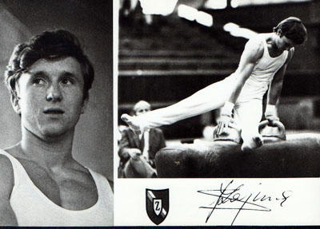

Andrzej Szajna (POL)

1975 European FX Champion
Participant in 7 European Championships and 5 World Championships
Medal Total
World Championships: 2 Bronze
European Championships: 1 Gold, 3 Silver, 2 Bronze
Andrzej was born in 1949 in Bydogoszcz. He trained under coach Joszef Karniewiczowi at Zawisza Sports Club and won over 40 Polish titles during his long sporting career. After retiring in 1984, he became a coach of young gymnasts at his club in Bydogoszcz. He has 7 children - 5 daughters and 2 sons - and 7 grandchildren.
Competition Results
1969
Army Spartakiade: 3rd V
Tournament "Spordilekhta": 1st FX, 1st V
1970
World Championships: 5th Team, 35th AA
1971
European Championships: 5th AA, 2nd V, 3rd
R, 4th HB
1972
Blume Memorial: 1st AA
Intl. Championships of Romania: 2nd AA
Olympic Games: 4th Team, 15th AA
1973
European Championships: 6th AA, 2nd V, 5th HB
Paris Grand Prix: 1st AA
1974
Golden Sands: 1st AA, 1st R, 1st V, 2nd HB, 3rd PB, 4th FX
Milk Meet: 2nd AA
USA-POL Dual Meet: 1st AA
World Championships: 10th Team, 8th AA, 3rd R, 3rd
HB, 4th V
1975
European Championships: 5th AA, 1st FX, 2nd
V, 3rd HB, 5th PB
Grand Prix of Paris: 1st AA, 1st FX, 1st R, 1st V, 1st PB, 1st HB
Jr. POL-Armenia Dual Meet: 1st Team, 3rd AA
Pre-Olympics: 7th AA, 1st V, 3rd FX, 3rd R, 6th PB
World Cup: 10th AA
1976
American Cup: 5th AA
Calgary International: 1st FX, 2nd V
Milk Meet: 10th AA
Olympic Games: 11th Team, 6th AA, 6th PB
Third Olympic Qualifying Competition: 6th Team, 2nd AA
1977
European Championships: 57th AA
Paris Grand Prix: 3rd AA, 1st FX, 2nd HB, 3rd PB
1978
Army Club Championships: 3rd AA
Ontario Cup: 2nd AA
Polish Championships: 1st AA
World Championships: 11th Team, 29th AA
1979
European Championships: 44th AA, 4th FX
Paris Grand Prix: 2nd AA
World Championships: 28th AA
1980
Olympic Games: 17th AA
1981
Ennia Gold Cup: 4th AA
European Championships: 32nd AA, 6th FX, 6th R
World Championships: 19th Team, 56th AA (prelims)
1983
CSSR-POL Dual Meet: 2nd AA
European Championships: 39th AA
Polish Championships: 1st AA
This page was created on March 25, 2000
and was last updated on February 22, 2021.
© Gymn Forum